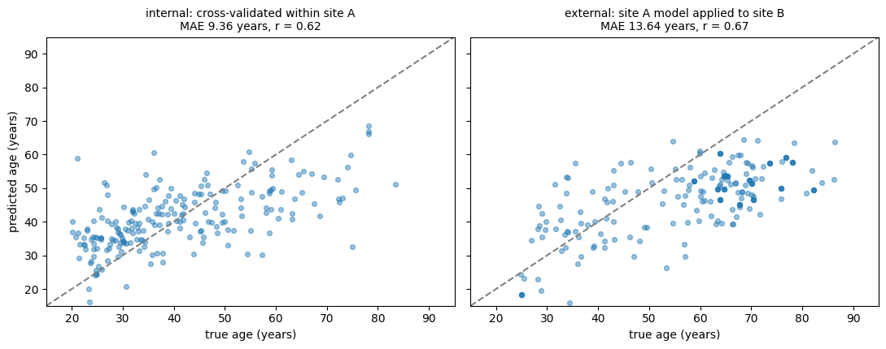
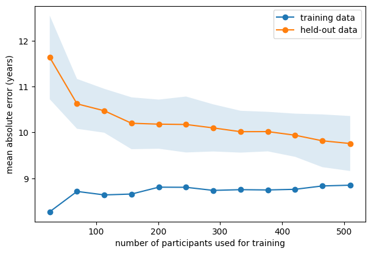

Generalizability#
By the end of chapter 5 we had an honest recipe: put everything in a pipeline, tune by inner cross-validation, estimate performance by an outer one, compare against a baseline. Follow it and the number you report is not inflated by overfitting or by leakage.
It is still not the number you actually care about.
Cross-validation estimates how well your model predicts new participants drawn like yours — same scanner, same recruitment, same preprocessing, same decade. The question a clinician asks is how well it predicts their patients, in their hospital, next year. That is a different question, and the gap between the two is the subject of this chapter.
Internal and external validation#
The vocabulary is worth fixing.
Internal validation re-uses one dataset: train-test splits, cross-validation, the bootstrap. It answers: given data from this distribution, does my procedure produce a model that works on more data from this distribution?
External validation applies the frozen model to data collected separately — another site, another cohort, another time — and answers: does it work over there?
Internal validation is cheap and answers a narrow question. External validation is expensive and answers the question you actually asked. They are not interchangeable, and — this is the part that surprises people — a perfectly executed internal validation does not put an upper bound on how badly external validation can go.
A worked example: how large is the gap?#
It is rare for a single paper to report both numbers honestly, which is what makes [12] such a useful teaching case. The study asks whether resting-state functional connectivity — a five-minute scan in which the participant does nothing — can predict how strongly that person learns from pain.
The methodology is close to the recipe of this book, and in one respect goes beyond it:
feature selection and hyperparameter tuning inside a nested leave-one-participant-out cross-validation, so no leakage through the tuning;
the final model — ten connections, a fixed regularization strength, and every preprocessing parameter — frozen and publicly pre-registered before the validation data were analyzed;
two independent validation cohorts, one of which used a different paradigm, different personnel and a different pain modality (visceral rather than heat).
The results:
correlation between predicted and observed |
variance explained |
|
|---|---|---|
discovery sample (n = 25), nested cross-validation |
r = 0.72 |
~52% |
external validation (n = 49, two cohorts) |
r = 0.34 |
8–12% |
Same model. Same lab. Same scanner. Cross-validated exactly as this book recommends. And roughly five-sixths of the explained variance evaporated on contact with new data.
The authors’ own explanation has two parts, and neither is misconduct. First, cross-validation in a small sample is unbiased but highly variable: the estimate is right on average over many hypothetical studies, and any one study can land far above the truth by luck — with n = 25, far above. Second, even a pre-registered pipeline leaves some analytic flexibility during the discovery phase, and flexibility inflates whatever is measured on the data it was exercised on.
Why generalization fails: a taxonomy#
It helps to be specific about what differs between your data and the new data. Write the joint distribution as \(P(X, y)\), and there are three canonical ways for it to move.
Covariate shift: \(P(X)\) changes, \(P(y \mid X)\) stays. Your new site scans older participants, or uses a different sequence that changes the intensity distribution, but the relationship between brain structure and age is the same. This is the mildest case and sometimes correctable.
Label shift: \(P(y)\) changes while \(P(X \mid y)\) stays. Your model was developed in a cohort where 50% of participants had the disorder, and is deployed where 2% do. People with the disorder look the same in both places — but every probability the model outputs is now miscalibrated, and the positive predictive value collapses.
Concept drift: \(P(y \mid X)\) itself changes. Diagnostic criteria are revised; treatment practice changes what the measurement means; a proxy that used to track the target stops tracking it. This is the one that no amount of reweighting can fix.
To these, biomedical data adds a fourth that cuts across all three: site and scanner effects. Different hardware, sequences and preprocessing produce systematic differences in the features themselves, large enough that a model can learn to identify the site and ride that signal — which works beautifully until it meets a site it has never seen.
Seeing it happen#
We can produce a distribution shift on the IXI data without simulating anything, because the file comes with one built in. As we saw in chapter 1, the rows are ordered such that mean age drifts substantially across the file. Splitting by position rather than at random therefore gives us two genuinely different populations — which is exactly what we have been carefully avoiding all book, and exactly what we now want.
import numpy as np
import pandas as pd
import seaborn as sns
import matplotlib.pyplot as plt
from sklearn.linear_model import Ridge
from sklearn.preprocessing import StandardScaler
from sklearn.pipeline import Pipeline
from sklearn.model_selection import cross_val_predict, KFold, learning_curve
from sklearn.metrics import mean_absolute_error
DATA_URL = "https://raw.githubusercontent.com/pni-lab/predmod_lecture/master/ex_data/IXI/ixi.csv"
ixi_ordered = pd.read_csv(DATA_URL) # deliberately NOT shuffled here
TARGET = 'Age'
FEATURES = [c for c in ixi_ordered.columns if c.endswith('_volume')]
# two "sites": the first and the last third of the file. Within each site we shuffle, so that the
# only thing distinguishing them is which part of the file they came from
site_a = ixi_ordered.iloc[:210].sample(frac=1, random_state=42).reset_index(drop=True)
site_b = ixi_ordered.iloc[-210:].sample(frac=1, random_state=42).reset_index(drop=True)
print(f'site A: n={len(site_a)}, mean age {site_a[TARGET].mean():.1f} '
f'(range {site_a[TARGET].min():.0f}-{site_a[TARGET].max():.0f})')
print(f'site B: n={len(site_b)}, mean age {site_b[TARGET].mean():.1f} '
f'(range {site_b[TARGET].min():.0f}-{site_b[TARGET].max():.0f})')
site A: n=210, mean age 40.8 (range 20-83)
site B: n=210, mean age 57.6 (range 25-86)
model = Pipeline([('standardize', StandardScaler()), ('regression', Ridge(alpha=100))])
# internal validation on site A
internal = cross_val_predict(model, X=site_a[FEATURES], y=site_a[TARGET], cv=KFold(5))
internal_mae = mean_absolute_error(site_a[TARGET], internal)
# external validation: freeze the model trained on site A, apply it to site B
model.fit(X=site_a[FEATURES], y=site_a[TARGET])
external = model.predict(site_b[FEATURES])
external_mae = mean_absolute_error(site_b[TARGET], external)
baseline_a = mean_absolute_error(site_a[TARGET], np.full(len(site_a), site_a[TARGET].mean()))
baseline_b = mean_absolute_error(site_b[TARGET], np.full(len(site_b), site_a[TARGET].mean()))
def report(true, predicted, label, baseline):
true, predicted = np.asarray(true), np.asarray(predicted)
return {'validation': label,
'MAE (years)': mean_absolute_error(true, predicted),
'baseline MAE': baseline,
'correlation r': np.corrcoef(true, predicted)[0, 1],
'mean signed error': np.mean(predicted - true)}
pd.DataFrame([report(site_a[TARGET], internal, 'internal (within site A)', baseline_a),
report(site_b[TARGET], external, 'external (site A -> site B)', baseline_b)]).round(2)
| validation | MAE (years) | baseline MAE | correlation r | mean signed error | |
|---|---|---|---|---|---|
| 0 | internal (within site A) | 9.36 | 12.44 | 0.62 | 0.00 |
| 1 | external (site A -> site B) | 13.64 | 20.30 | 0.67 | -10.56 |
fig, axes = plt.subplots(1, 2, figsize=(11, 4.4), sharex=True, sharey=True)
for ax, (true, pred, name) in zip(
axes,
[(site_a[TARGET], internal, 'internal: cross-validated within site A'),
(site_b[TARGET], external, 'external: site A model applied to site B')]):
ax.scatter(true, pred, alpha=0.45, s=18)
limits = [15, 95]
ax.plot(limits, limits, ls='--', color='0.5')
ax.set_xlim(limits)
ax.set_ylim(limits)
ax.set_xlabel('true age (years)')
ax.set_title(f'{name}\nMAE {mean_absolute_error(true, pred):.2f} years, '
f'r = {np.corrcoef(true, pred)[0, 1]:.2f}', fontsize=10)
axes[0].set_ylabel('predicted age (years)')
plt.tight_layout()
plt.show()

Look carefully, because this is not the failure you were expecting.
The correlation went up, from 0.62 to 0.67. By that measure the model generalized better to the new site than it did to held-out data from its own. And yet the mean absolute error rose by more than four years.
The mean signed error says what happened: in site A the model is unbiased (0.00 years), and in site B it is 10.6 years too low, on average. It was fitted in a population with a mean age of 41 and applied to one with a mean age of 58, and it brought its training population’s centre of gravity with it. The ordering of participants is preserved — hence the correlation — while every individual prediction is wrong in the same direction.
This is label shift in its purest form: \(P(y)\) moved, the age–brain relationship did not. And it makes concrete the warning from chapter 2: a model that is systematically ten years off can still correlate beautifully with the truth. A paper reporting only \(r\) would present this as a successful external validation.
The good news about label shift is that it is the most tractable of the three. Because the shape of the relationship survived, a recalibration — re-estimating an intercept, or an intercept and slope, on a modest number of participants from the new site — recovers most of the loss. The catch is that recalibration needs labelled data from the new site, which is precisely what you often do not have. And recalibration cannot rescue you from concept drift, where the relationship itself has changed.
Exercise 6.1
Reverse the experiment: train on site B and validate on site A. Is the degradation symmetric?
Solution
It is not. Extrapolation is not symmetric in general: a model trained on a wide age range and applied to a narrow one behaves quite differently from the reverse, and which direction hurts more depends on where the relationship is steep and how much data supports each region. The practical lesson is that “we validated across sites” is not a single property — it matters which site was the training one.
How much data is enough?
One recurring reason models fail to generalize is simply that they were developed on too few participants — the RCPL discovery sample was 25. The tool for thinking about this is the learning curve: performance as a function of training set size.
ixi = ixi_ordered.sample(frac=1, random_state=42).reset_index(drop=True) # back to honest splits
sizes, train_scores, test_scores = learning_curve(
model, X=ixi[FEATURES], y=ixi[TARGET],
train_sizes=np.linspace(0.05, 1.0, 12), cv=KFold(5),
scoring='neg_mean_absolute_error', shuffle=True, random_state=42)
train_mae = -train_scores.mean(axis=1)
test_mae = -test_scores.mean(axis=1)
test_sd = test_scores.std(axis=1)
plt.figure(figsize=(7, 4.6))
plt.plot(sizes, train_mae, marker='o', label='training data')
plt.plot(sizes, test_mae, marker='o', label='held-out data')
plt.fill_between(sizes, test_mae - test_sd, test_mae + test_sd, alpha=0.15)
plt.xlabel('number of participants used for training')
plt.ylabel('mean absolute error (years)')
plt.legend()
plt.show()
print(f'held-out MAE at n={sizes[0]:.0f}: {test_mae[0]:.2f} years')
print(f'held-out MAE at n={sizes[-1]:.0f}: {test_mae[-1]:.2f} years')

held-out MAE at n=25: 11.63 years
held-out MAE at n=510: 9.76 years
Two things to read off a learning curve.
Is it still falling? If the held-out curve has not flattened, more participants would buy more accuracy, and your model is data-limited rather than method-limited. Trying a fancier algorithm is then usually a worse investment than collecting more data.
How wide is the band? The shaded region is the spread across folds. At small training sizes it is enormous — which is the RCPL lesson in picture form. A cross-validated estimate from a small sample is a draw from a wide distribution, and papers are preferentially written about the lucky draws.
Note
This is the reason behind the sample-size debate in brain-wide association studies. Reported brain-behaviour effects were shown to be substantially inflated at the sample sizes typical of the field, with replicable effects requiring far larger samples than were customary [13]. The argument is not that small studies are dishonest; it is that small-sample estimates are variable, and publication selects from the top of a variable distribution.
What to do about it#
Validate externally, and say so plainly. If you have only internal validation, report it as internal validation. A model that has never met independent data is a hypothesis. The literature is full of what happens when this step is skipped: a widely deployed commercial sepsis-prediction model scored an area under the curve of 0.63 at an independent hospital against the 0.76-0.83 claimed by its vendor, missing two-thirds of sepsis cases [14]; and of 62 machine learning models for COVID-19 imaging published in the first nine months of the pandemic, a systematic review judged that none was fit for clinical use, most often for exactly the methodological reasons of chapters 3 to 5 [15].
Freeze and pre-register the model. The RCPL “registered model” design — fix every parameter, publish it, then collect or unlock the validation data — makes leakage and flexible analysis arithmetically impossible rather than merely unlikely.
Design the splits to match the deployment question. If your model will be used at a new
hospital, leave-one-site-out cross-validation estimates the thing you care about, and a random
split does not. Scikit-learn’s GroupKFold and LeaveOneGroupOut exist for this.
Harmonize, then check. Methods such as ComBat can reduce site effects in the features. They do not reliably remove them, and you must verify rather than assume — which is the subject of the next page.
Report the population, not just the performance. Age range, sex distribution, scanner, sequence, recruitment, inclusion criteria. An MAE without a described population is not interpretable, because someone else’s MAE on a narrower cohort will look better for no good reason.
Exercise 6.2
Our site A/site B split confounds two things: the age distribution differs, and the participants may have been scanned differently. With the data at hand, can you tell these apart? What would you need in order to?
Solution
You cannot, and that is the point. The CSV has no site variable, so scanner differences and age differences are perfectly entangled in this split. To separate them you would need the site labels, and then either a site-stratified split (equal age distributions across sites) or the conditional tests of the next page. The general lesson: when two explanations for a performance drop are confounded by design, no analysis of that dataset can adjudicate between them — you need the metadata, and you need it recorded before the fact.
Exercise 6.3
Plot the learning curve for the unregularized LinearRegression instead of Ridge(alpha=100).
At which sample size does the difference between them stop mattering?
Generalization asks whether the model still works elsewhere. The next page asks a harder question: whether what it learned was ever the thing you thought it was.